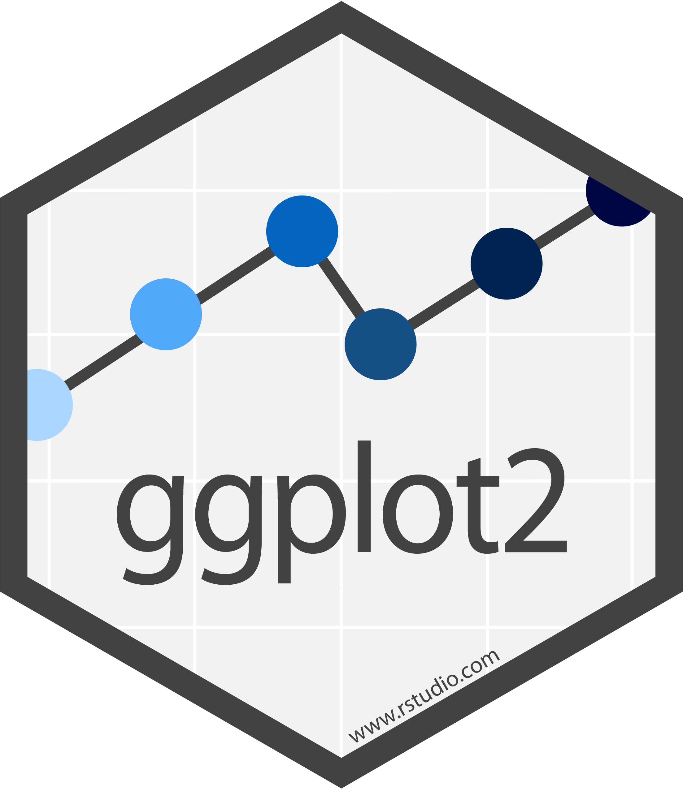
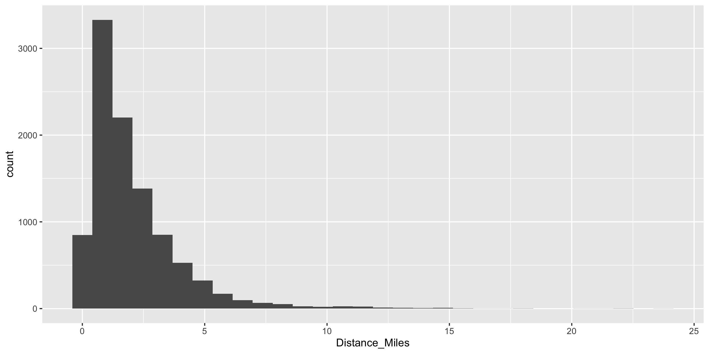
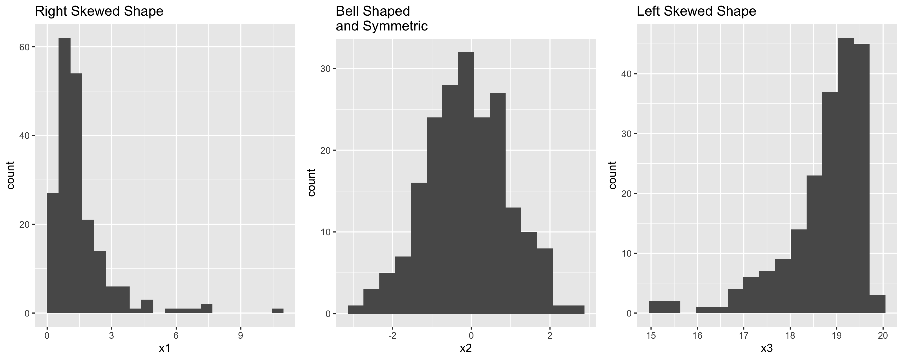
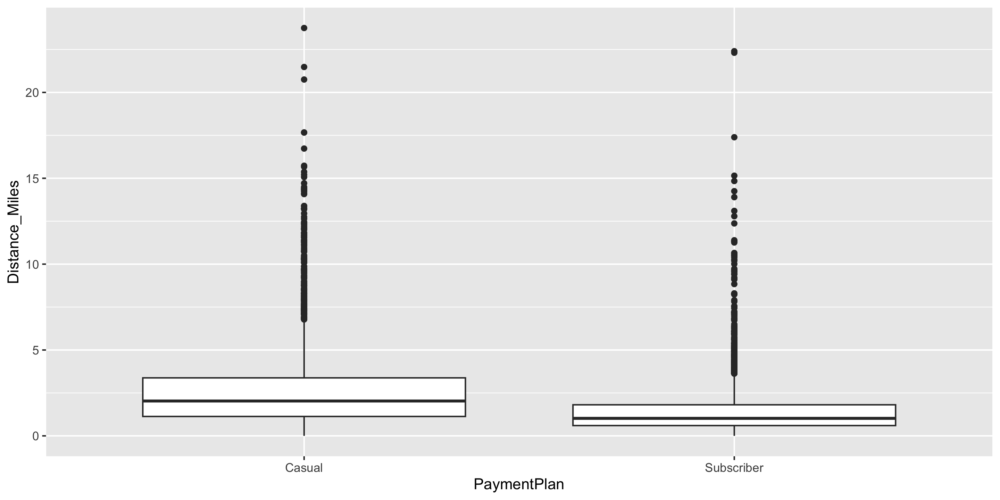
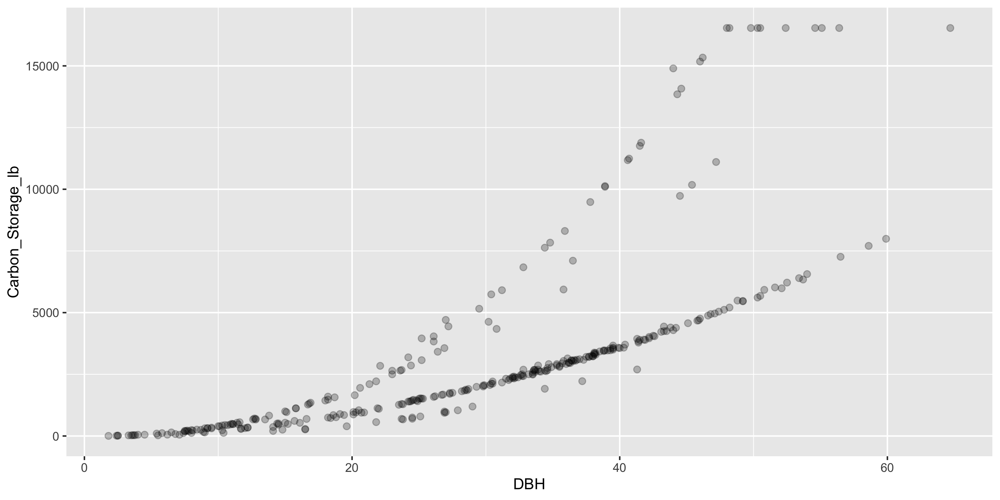
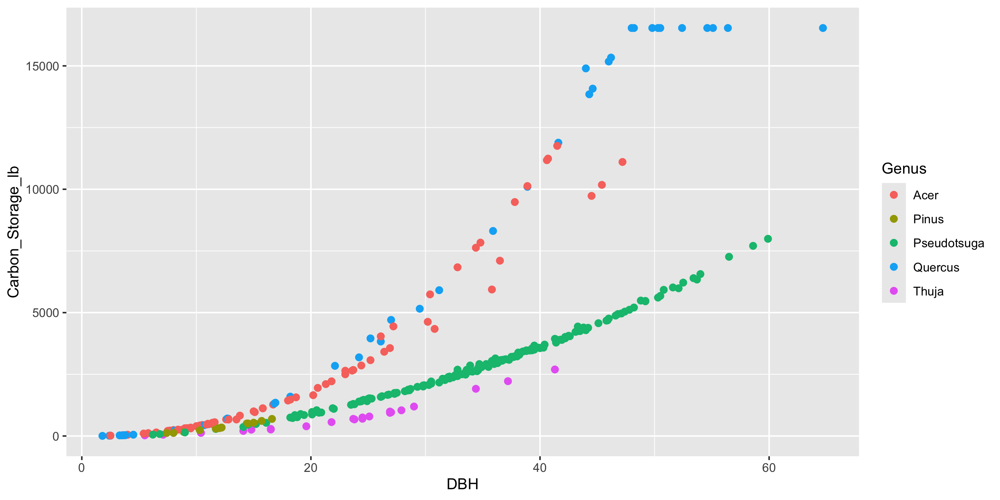

Intro to ggplot2
Grayson White
Math 141
Week 2 | Fall 2025
Goals for Today
- Recall our motivation for good graphics
- Learn the general structure of
ggplot2. - Learn a few standard graphs for numerical/quantitative data:
- Histogram: one numerical variable
- Side-by-side boxplot: one numerical variable and one categorical variable
- Side-by-side violin plot: one numerical variable and one categorical variable
- Scatterplot: two numerical variables
- Linegraph: two numerical variables
Load Necessary Packages

ggplot2 is part of this collection of data science packages.
Data Setting: Portland Bikeshare Data
Import the Data
Rows: 9,999
Columns: 19
$ RouteID <dbl> 4074085, 3719219, 3789757, 3576798, 3459987, 3947695,…
$ PaymentPlan <chr> "Subscriber", "Casual", "Casual", "Subscriber", "Casu…
$ StartHub <chr> "SE Elliott at Division", "SW Yamhill at Director Par…
$ StartLatitude <dbl> 45.50513, 45.51898, 45.52990, 45.52389, 45.53028, 45.…
$ StartLongitude <dbl> -122.6534, -122.6813, -122.6628, -122.6722, -122.6547…
$ StartDate <chr> "8/17/2017", "7/22/2017", "7/27/2017", "7/12/2017", "…
$ StartTime <time> 10:44:00, 14:49:00, 14:13:00, 13:23:00, 19:30:00, 10…
$ EndHub <chr> "Blues Fest - SW Waterfront at Clay - Disabled", "SW …
$ EndLatitude <dbl> 45.51287, 45.52142, 45.55902, 45.53409, 45.52990, 45.…
$ EndLongitude <dbl> -122.6749, -122.6726, -122.6355, -122.6949, -122.6628…
$ EndDate <chr> "8/17/2017", "7/22/2017", "7/27/2017", "7/12/2017", "…
$ EndTime <time> 10:56:00, 15:00:00, 14:42:00, 13:38:00, 20:30:00, 10…
$ TripType <lgl> NA, NA, NA, NA, NA, NA, NA, NA, NA, NA, NA, NA, NA, N…
$ BikeID <dbl> 6163, 6843, 6409, 7375, 6354, 6088, 6089, 5988, 6857,…
$ BikeName <chr> "0488 BIKETOWN", "0759 BIKETOWN", "0614 BIKETOWN", "0…
$ Distance_Miles <dbl> 1.91, 0.72, 3.42, 1.81, 4.51, 5.54, 1.59, 1.03, 0.70,…
$ Duration <dbl> 11.500, 11.383, 28.317, 14.917, 60.517, 53.783, 23.86…
$ RentalAccessPath <chr> "keypad", "keypad", "keypad", "keypad", "keypad", "ke…
$ MultipleRental <lgl> FALSE, FALSE, FALSE, FALSE, TRUE, FALSE, FALSE, FALSE…Inspect the Data
# A tibble: 6 × 19
RouteID PaymentPlan StartHub StartLatitude StartLongitude StartDate StartTime
<dbl> <chr> <chr> <dbl> <dbl> <chr> <time>
1 4074085 Subscriber SE Ellio… 45.5 -123. 8/17/2017 10:44
2 3719219 Casual SW Yamhi… 45.5 -123. 7/22/2017 14:49
3 3789757 Casual NE Holla… 45.5 -123. 7/27/2017 14:13
4 3576798 Subscriber NW Couch… 45.5 -123. 7/12/2017 13:23
5 3459987 Casual NE 11th … 45.5 -123. 7/3/2017 19:30
6 3947695 Casual SW Moody… 45.5 -123. 8/8/2017 10:01
# ℹ 12 more variables: EndHub <chr>, EndLatitude <dbl>, EndLongitude <dbl>,
# EndDate <chr>, EndTime <time>, TripType <lgl>, BikeID <dbl>,
# BikeName <chr>, Distance_Miles <dbl>, Duration <dbl>,
# RentalAccessPath <chr>, MultipleRental <lgl>What does a row represent here?
Inspect the Data
Grammar of Graphics
- data: Data frame that contains the raw data
- Variables used in the graph
- geom: Geometric shape that the data are mapped to.
- EX: Point, line, bar, text, …
- aesthetic: Visual properties of the geom
- EX: X (horizontal) position, y (vertical) position, color, fill, shape
- scale: Controls how data are mapped to the visual values of the aesthetic.
- EX: particular colors, log scale
- guide: Legend/key to help user convert visual display back to the data
ggplot2 example code
Guiding Principle: We will map variables from the data to the aesthetic attributes (e.g. location, size, shape, color) of geometric objects (e.g. points, lines, bars).
- There are other layers, such as
scales_---_---()andlabs(), but we will wait on those.
Histograms
Binned counts of data.
Great for assessing shape.

Data Shapes

Histograms

Histograms

- mapping to a variable goes in
aes() - setting to a specific value goes in the
geom_---()
Boxplots
- Five number summary:
- Minimum
- First quartile (Q1)
- Median
- Third quartile (Q3)
- Maximum
- Interquartile range (IQR) \(=\) Q3 \(-\) Q1
- Outliers: unusual points
- Boxplot defines unusual as being beyond \(1.5*IQR\) from \(Q1\) or \(Q3\).
- Whiskers: reach out to the furthest point that is NOT an outlier

Boxplots

Boxplots
Boxplots

Boxplots

Violin Plots

Boxplot Versus Violin Plots

New Data Context: pdxTrees
- The
pdxTreesR package contains data on all the trees in the Portland Metro Area. - Today, we’ll look at the Maple, Oak, Pine, Cedar, and Douglas-fir trees in a few parks near Reed.
- Let’s load the data
New Data Context: pdxTrees
- The
pdxTreesR package contains data on all the trees in the Portland Metro Area. - Today, we’ll look at the Maple, Oak, Pine, Cedar, and Douglas-fir trees in a few parks near Reed.
- Let’s load the data
- Don’t worry, we haven’t learned the below code yet.
Inspect the data
Rows: 323
Columns: 34
$ Longitude <dbl> -122.6304, -122.6301, -122.6301, -122.6299,…
$ Latitude <dbl> 45.49201, 45.49080, 45.49081, 45.49094, 45.…
$ UserID <chr> "7670", "7671", "7672", "7902", "7903", "79…
$ Genus <chr> "Quercus", "Pseudotsuga", "Pseudotsuga", "Q…
$ Family <chr> "Fagaceae", "Pinaceae", "Pinaceae", "Fagace…
$ DBH <dbl> 3.3, 43.1, 48.2, 2.4, 11.7, 33.5, 23.5, 37.…
$ Inventory_Date <dttm> 2018-07-26, 2018-07-26, 2018-07-26, 2018-0…
$ Species <chr> "QURU", "PSME", "PSME", "QURU", "PSME", "PS…
$ Common_Name <chr> "Northern Red Oak", "Douglas-Fir", "Douglas…
$ Condition <chr> "Fair", "Fair", "Fair", "Fair", "Good", "Fa…
$ Tree_Height <dbl> 16, 148, 148, 16, 64, 118, 121, 105, 24, 12…
$ Crown_Width_NS <dbl> 14, 61, 52, 9, 29, 32, 37, 43, 38, 44, 31, …
$ Crown_Width_EW <dbl> 10, 43, 48, 14, 32, 50, 31, 44, 35, 36, 33,…
$ Crown_Base_Height <dbl> 5, 6, 7, 2, 3, 60, 27, 10, 5, 19, 17, 6, 5,…
$ Collected_By <chr> "Staff", "Staff", "Staff", "Staff", "Staff"…
$ Park <chr> "Kenilworth Park", "Kenilworth Park", "Keni…
$ Scientific_Name <chr> "Quercus rubra", "Pseudotsuga menziesii", "…
$ Functional_Type <chr> "BD", "CE", "CE", "BD", "CE", "CE", "CE", "…
$ Mature_Size <fct> L, L, L, L, L, L, L, L, S, L, L, L, L, L, L…
$ Native <chr> "No", "Yes", "Yes", "No", "Yes", "Yes", "Ye…
$ Edible <chr> NA, NA, NA, NA, NA, NA, NA, NA, NA, NA, NA,…
$ Nuisance <chr> NA, NA, NA, NA, NA, NA, NA, NA, NA, NA, NA,…
$ Structural_Value <dbl> 288.80, 12462.74, 14395.22, 143.21, 1348.26…
$ Carbon_Storage_lb <dbl> 25.2, 4221.2, 5206.7, 11.6, 285.3, 2513.2, …
$ Carbon_Storage_value <dbl> 1.63, 273.80, 337.73, 0.75, 18.51, 163.01, …
$ Carbon_Sequestration_lb <dbl> 3.7, 43.5, 49.8, 2.4, 9.6, 32.4, 21.4, 37.4…
$ Carbon_Sequestration_value <dbl> 0.24, 2.82, 3.23, 0.15, 0.62, 2.10, 1.39, 2…
$ Stormwater_ft <dbl> 5.2, 157.1, 145.2, 4.7, 56.8, 73.3, 68.1, 1…
$ Stormwater_value <dbl> 0.35, 10.50, 9.71, 0.31, 3.80, 4.90, 4.55, …
$ Pollution_Removal_value <dbl> 0.63, 19.08, 17.64, 0.57, 6.90, 8.90, 8.27,…
$ Pollution_Removal_oz <dbl> 1.4, 42.3, 39.1, 1.3, 15.3, 19.7, 18.3, 30.…
$ Total_Annual_Services <dbl> 1.21, 32.40, 30.58, 1.04, 11.31, 15.90, 14.…
$ Origin <chr> "North America - eastern Canada and eastern…
$ Species_Factoid <chr> "Acorns take two years to mature and are an…Inspect the data
# A tibble: 6 × 34
Longitude Latitude UserID Genus Family DBH Inventory_Date Species
<dbl> <dbl> <chr> <chr> <chr> <dbl> <dttm> <chr>
1 -123. 45.5 7670 Quercus Fagac… 3.3 2018-07-26 00:00:00 QURU
2 -123. 45.5 7671 Pseudotsuga Pinac… 43.1 2018-07-26 00:00:00 PSME
3 -123. 45.5 7672 Pseudotsuga Pinac… 48.2 2018-07-26 00:00:00 PSME
4 -123. 45.5 7902 Quercus Fagac… 2.4 2018-07-26 00:00:00 QURU
5 -123. 45.5 7903 Pseudotsuga Pinac… 11.7 2018-07-26 00:00:00 PSME
6 -123. 45.5 7905 Pseudotsuga Pinac… 33.5 2018-07-26 00:00:00 PSME
# ℹ 26 more variables: Common_Name <chr>, Condition <chr>, Tree_Height <dbl>,
# Crown_Width_NS <dbl>, Crown_Width_EW <dbl>, Crown_Base_Height <dbl>,
# Collected_By <chr>, Park <chr>, Scientific_Name <chr>,
# Functional_Type <chr>, Mature_Size <fct>, Native <chr>, Edible <chr>,
# Nuisance <chr>, Structural_Value <dbl>, Carbon_Storage_lb <dbl>,
# Carbon_Storage_value <dbl>, Carbon_Sequestration_lb <dbl>,
# Carbon_Sequestration_value <dbl>, Stormwater_ft <dbl>, …Scatterplots
- Explore relationships between numerical variables.
- We will be especially interested in linear relationships.
Scatterplots

- Fix over-plotting
- What’s going on in this graph?
Scatterplots
Linegraphs
Linegraphs
Linegraphs vs scatterplots


- Which do you prefer?
- Does it depend on context?
- Which might be better if we put time on the x-axis